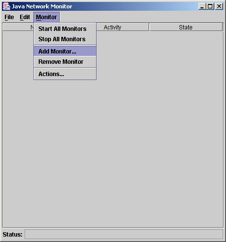
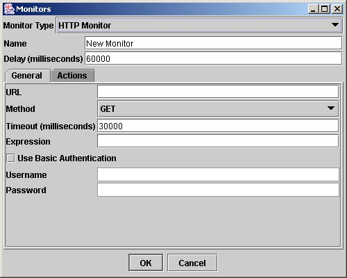
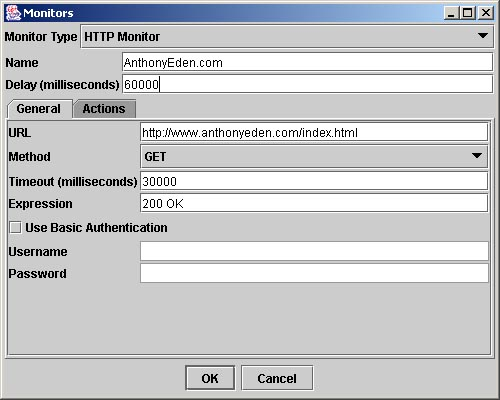
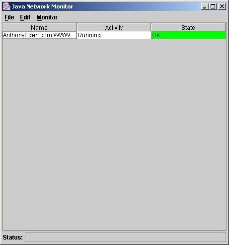
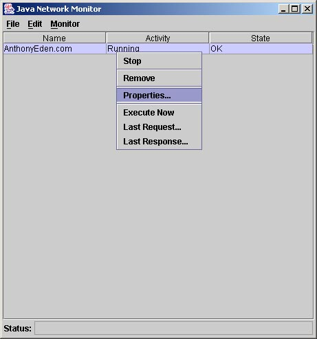
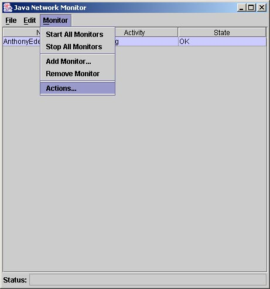
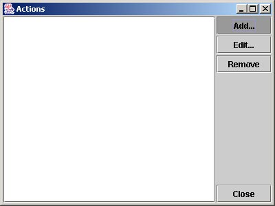
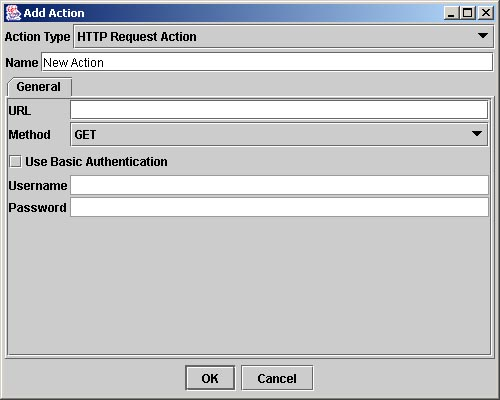
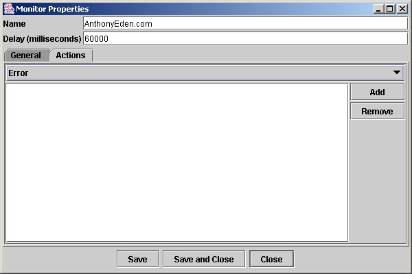

Java Network Monitor
The Java Network Monitor (JNM) is an open source Java application which allows you to define monitors which can poll network services at defined intervals and execute user-definable actions when the service status changes.
Instructions
After downloading and extracting JNM, start the program by either double-clicking the JNM.jar file or entering the following on the command line:
java -jar JNM.jar. The main screen should appear. You must now configure your monitors. Select Monitor -> Add Monitor... from the menu.
The Monitor dialog will appear. You can specify a name and a delay for all monitors. Individual monitor implementations provide different editors for their required properties. Selecting a different monitor type from the combo box will cause the UI in the General tab to change. Note: Selecting a new monitor type will remove all changes you have made in the General tab!

Fill in the fields of the monitor dialog. The example below shows how to configure an HTTP monitor. You can specify the URL which will be requested, the timeout, the request method (GET/POST/HEAD), the regular expression to use to verify the response, as well as basic authentication information if necessary.

When you click OK it will add your monitor to the main screen's monitor table. The monitor table displays each monitor's name, its current activity and its current state. The color of the state cell will change depending on the state.

You can change a monitor's properties by right-clicking the monitor's row. You can also start and stop individual monitors, remove a monitor, execute a monitor immediately, and see the last request and response using this pop-up menu.

You can configure actions to be triggered when a monitor enters a particular state. First you must configure one or more actions by selecting Monitor -> Actions... from the menu.

An action manager dialog will appear. Using this dialog you can add, edit and remove actions from your action list.

Configuring an action is very similar to configuring a monitor. Fill in the necessary information in the General panel and click OK to save your changes.

Once you have created one or more actions you can assign them to monitors. When viewing the monitor's properties, select the Actions tab. There is a combo box with a list of all possible states. Selecting a state will show all actions which are triggered when the monitor is in that state. Note: actions will currently be triggered at every execution of the monitor, regardless if state has changed! You can add or remove actions from the state's action list with the add and remove button.

You can save your current configuration at any time. When you quit JNM you will be prompted to save your configuration if any changes have been made. Note: it is advised that for the moment you save your configuration manually on a regular basis to not lose any changes!
Monitors
JNM currently includes two monitor implementations:
- TCP Monitor
- Send a single raw payload over TCP to a server. Compares the resulting response against a user-defined regular expression.
- HTTP Monitor
- Invoke a particular URL. Includes support for Basic Authentication. Compares the resulting response against a user-defined regular expression.
More monitors will be added in the future.
You can also create your own monitor by extending the
com.anthonyeden.jnm.Monitorabstract base class and implementing theexecute()method. Theexecute()method is called at the end of each wait interval. Your implementation of theexecute()method can callsetState()at any time to update the current state of the server which is being polled. Available states are found in the MonitorState class and include:
MonitorState.OKMonitorState.DOWNMonitorState.ERRORMonitorState.FAILEDMonitorState.TIMEOUTMonitorState.NOT_TESTEDMonitor implementations must be accompanied by a class which implements the
com.anthonyeden.jnm.MonitorEditorinterface. Implementations of this class are used to provide a user-interface for editing your monitor's properties.To use your monitor implementation, include it in JNM's application classpath and add an entry to the jnm.xml configuration file:
<register-monitor>My Monitor</name> <classname>com.mycompany.MyMonitor</classname> <editorclass>com.com.mycompany.MyMonitorEditor</editorclass> </register-monitor>Actions
When a monitor enters a particular state one or more actions can be triggered. Currently JNM includes the following actions:
- HTTP Request Action
- Execute a specific URL. Includes support for basic authentication.
Additional actions can be created a similar fashion as monitors. You must create a class which extends from
com.anthonyeden.jnm.Action, implement theexecute(Monitor monitor)method, implement thecom.anthonyeden.jnm.ActionEditorinterface, and provide an entry in the jnm.xml configuration file:<register-action> <name>My Action</name> <classname>com.mycompany.MyAction</classname> <editorclass>com.mycompany.MyActionEditor</editorclass> </register-action>Legal
THIS SOFTWARE IS PROVIDED ``AS IS'' AND ANY EXPRESSED OR IMPLIED WARRANTIES, INCLUDING, BUT NOT LIMITED TO, THE IMPLIED WARRANTIES OF MERCHANTABILITY AND FITNESS FOR A PARTICULAR PURPOSE ARE DISCLAIMED. IN NO EVENT SHALL THE AUTHOR(S) BE LIABLE FOR ANY DIRECT, INDIRECT, INCIDENTAL, SPECIAL, EXEMPLARY, OR CONSEQUENTIAL DAMAGES (INCLUDING, BUT NOT LIMITED TO, PROCUREMENT OF SUBSTITUTE GOODS OR SERVICES; LOSS OF USE, DATA, OR PROFITS; OR BUSINESS INTERRUPTION) HOWEVER CAUSED AND ON ANY THEORY OF LIABILITY, WHETHER IN CONTRACT, STRICT LIABILITY, OR TORT (INCLUDING NEGLIGENCE OR OTHERWISE) ARISING IN ANY WAY OUT OF THE USE OF THIS SOFTWARE, EVEN IF ADVISED OF THE POSSIBILITY OF SUCH DAMAGE.
Acknowlegements
This product includes software developed by the Apache Software Foundation (http://www.apache.org/).